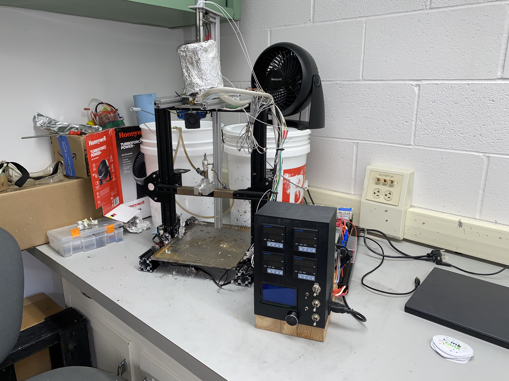
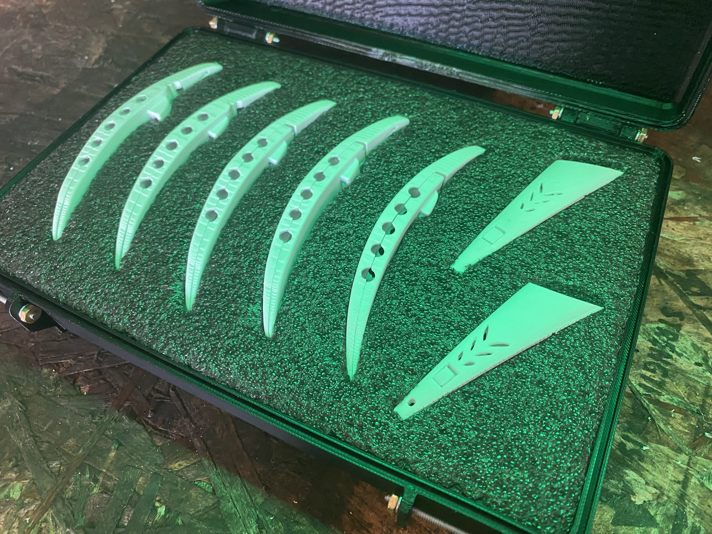
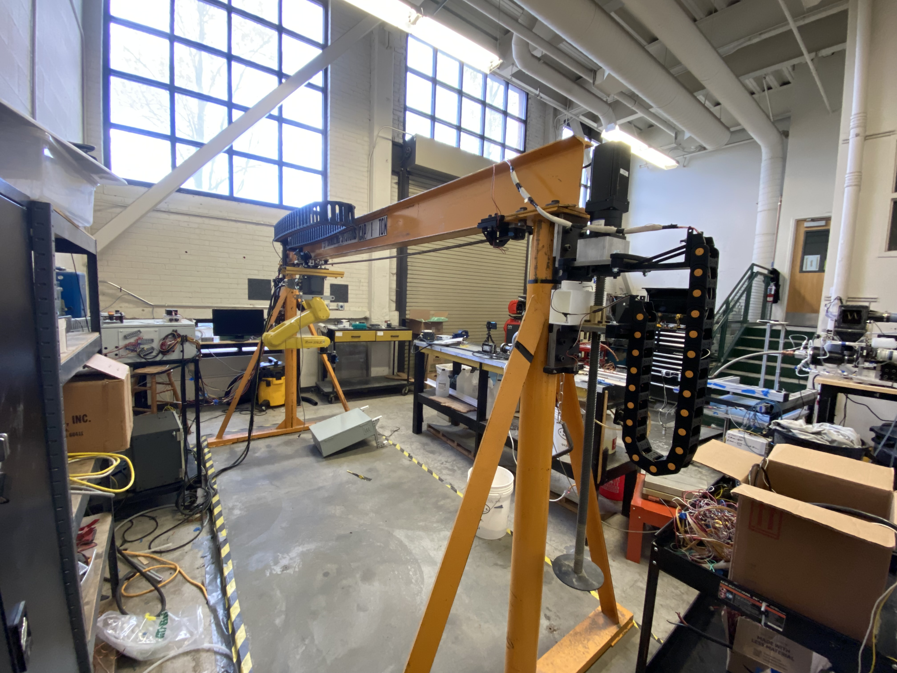
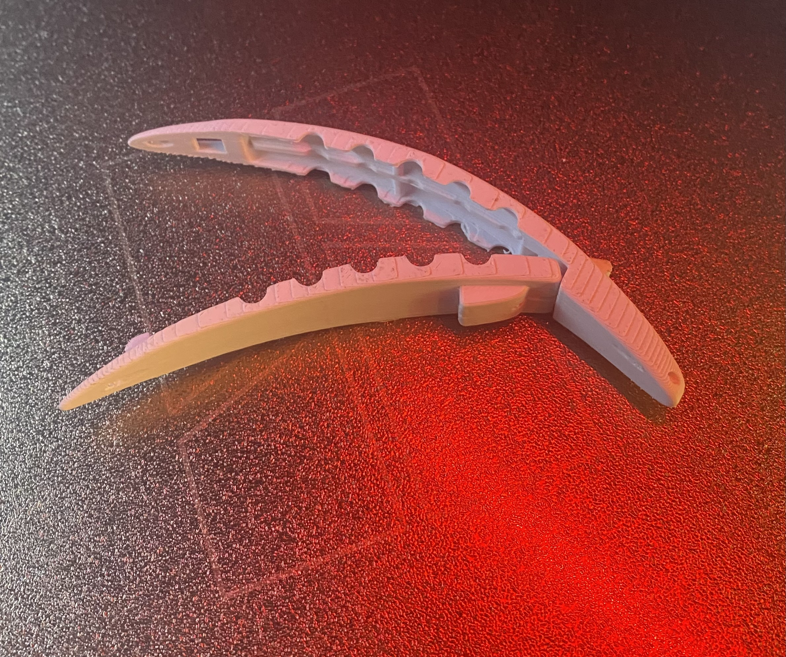
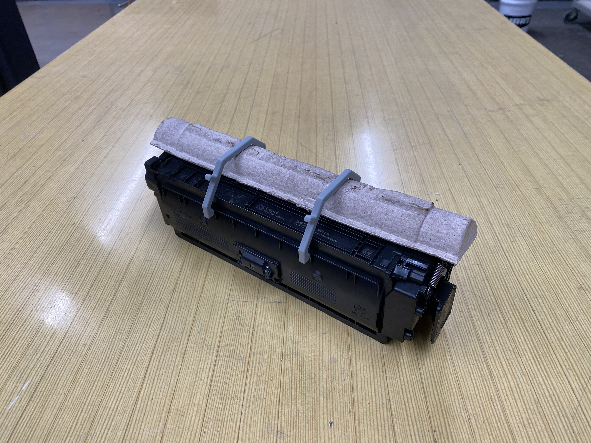
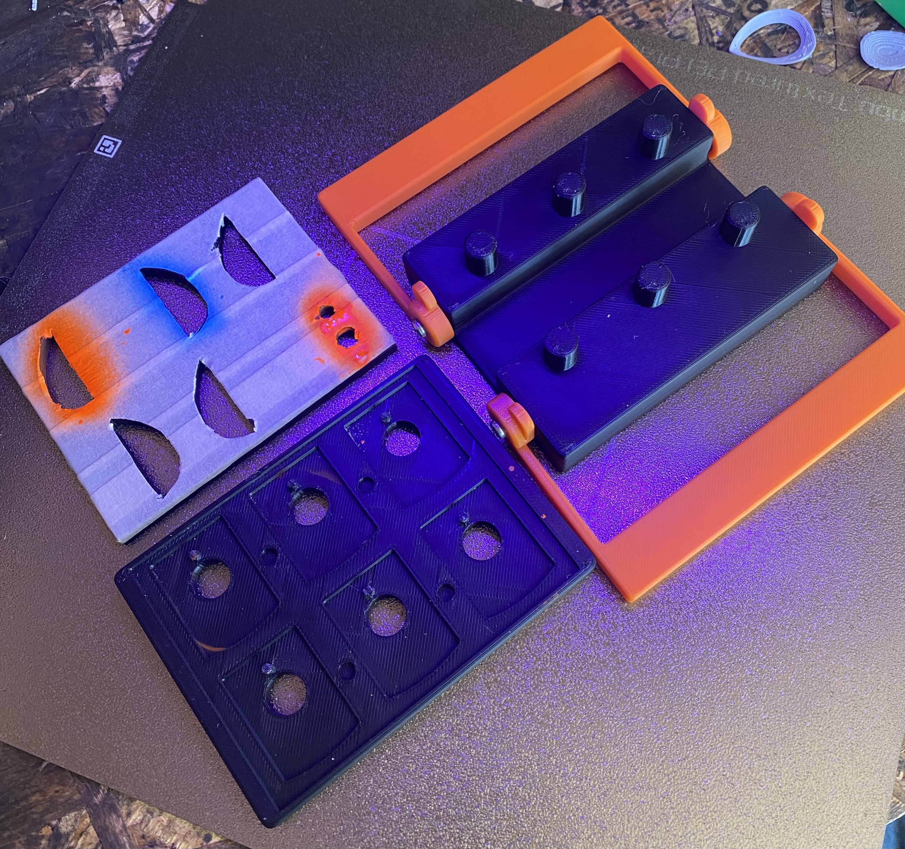

Featured Projects

Continuous Casting Machine
I joined this project with a first prototype already developed by previous teams, focused on casting nuclear fuel rods. My main responsibility was taking the existing machine and making it more precise and robust. I redesigned and modeled improved components in CAD, implemented design changes, and worked hands-on with troubleshooting and automation. While I was able to significantly increase the machine’s mechanical precision, I was not able to achieve consistent rod output. This experience deepened my expertise in R&D, rapid iteration, and root-cause troubleshooting in a real-world lab setting.

Fishing Lures (Group)
I took over this project after the initial concept was pitched to me, moving it from idea to production-ready prototypes. My primary focus was on designing functional features—such as a removable bottom half for easier maintenance and a unique clipping mechanism that eliminated the need for rubber bands. I handled all 3D CAD modeling, prototyping, and design iterations, working to ensure each lure was reliable and easy to assemble or repair.

Large 3D Printer
I was a core member of the team building a large-format 3D printer for sustainable wood composite research. My main engineering leadership was in the design and fabrication of the X-axis, the trolley, and the cable management system. I not only designed these parts in CAD, but also physically built them using 3D printing, manual milling, and manual lathing. This hands-on, end-to-end involvement ensured a tight feedback loop between design and real-world performance.

Fishing Lure (Single)
For this project, I 3D printed a custom fishing lure prototype based on my own CAD design. My work focused on optimizing the model for prototyping, ease of assembly, and practical function. I refined the design based on simulated performance and peer input, learning to iterate quickly and deliver a prototype ready for further field testing.

Shipping Cover (Disposable/Single-Use, Material R&D)
I designed a single-use shipping cover for mechanical parts, originally made from PS (polystyrene) plastic. To explore sustainability and manufacturability, I researched and prototyped alternatives including PLA, PHA, PHB, pulp, PLA-wood composite, laser-cut plywood, and even pulp injection molding (PIM). My role included CAD modeling, rapid prototyping, and comparative evaluation of material properties, cost, and protective performance, delivering an adaptable solution for shipping and storage.

Spinner Template
I developed a precision CAD template for spinner lures, enabling consistent manufacturing and painting. The design focused on maximizing repeatability and finish quality for small-batch or hobby production. This tool streamlined the lure-making process and improved the final product’s consistency and appearance.